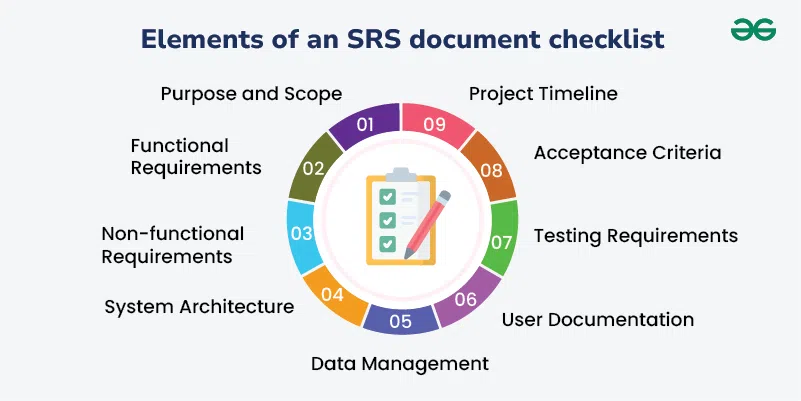

4.17 IEEE Standards for SRS
The IEEE (Institute of Electrical and Electronics Engineers) has published standards that define the recommended structure, content, and quality characteristics for Software Requirements Specifications. These standards provide a recognised template so that no important section is omitted and requirements are documented in a consistent, verifiable way.
The most widely referenced standards for exams are:
- IEEE Std 830-1998 — Recommended Practice for Software Requirements Specifications (superseded but still heavily cited in exams and textbooks).
- IEEE Std 29148-2011 — Systems and software engineering — Life cycle processes — Requirements engineering (current international standard; consolidates and updates earlier RE standards).
- IEEE Std 729-1983 — Glossary of software engineering terminology (defines "requirement" — see §4.9).
What is IEEE 830?
IEEE 830-1998 is a recommended practice (not a mandatory standard) that describes recommended approaches for the specification of software requirements. It is based on a model in which the result of the SRS process is an unambiguous and complete specification document.
IEEE 830 helps:
- Software customers to accurately describe what they wish to obtain.
- Software suppliers to understand exactly what the customer wants.
- Organisations to develop a standard SRS outline, define format and content, and create SRS quality checklists or writer's handbooks.
Benefits of a good SRS (IEEE 830)
- Basis for agreement: Establishes agreement between customers and suppliers on what the software product is to do.
- Reduces development effort: Forces all concerned groups to consider requirements rigorously before design begins, reducing later redesign, recoding, and retesting.
- Cost and schedule estimation: Provides a realistic basis for estimating project costs and obtaining approval for bids or price estimates.
- Validation and verification baseline: Provides a baseline against which compliance can be measured; organisations can develop V&V plans more productively.
- Facilitates transfer: Makes it easier to transfer the software product to new users or new machines.
- Basis for enhancement: Serves as a foundation for later enhancement of the finished product because it discusses the product, not the project that developed it.
IEEE 830 SRS document structure
IEEE 830 defines the following major sections for an SRS (see also §4.14):
Section 1 — Introduction
- 1.1 Purpose: The purpose of the requirements document and its intended audience.
- 1.2 Scope: The scope of the product — what it will and will not do.
- 1.3 Definitions, acronyms, and abbreviations: Glossary of terms used in the document.
- 1.4 References: List of referenced documents.
- 1.5 Overview: Overview of the remainder of the SRS document.
Section 2 — Overall description
This section describes general factors affecting the product — it does not state specific requirements but provides background for Section 3:
- 2.1 Product perspective: How the proposed system fits into the business context and its relationship with other systems.
- 2.2 Product functions: Summary of major functional capabilities (may include use case diagram or DFD).
- 2.3 User characteristics: Education, experience, and technical expertise of each user class.
- 2.4 Constraints: General constraints on the product (memory, operational, site adaptation).
- 2.5 Assumptions and dependencies: Factors assumed to be true and external dependencies.
- 2.6 Apportioning of requirements: Which requirements are deferred to future releases.
Section 3 — Specific requirements
This is the largest and most important section. Requirements must be detailed enough for designers to design and testers to verify. Every input, output, and function must be described.
- 3.1 External interface requirements: Detailed description of all inputs and outputs — user interfaces, hardware interfaces, software interfaces, and communication interfaces. Includes name, purpose, source/destination, valid range, units, timing, screen/window formats, data formats, and command formats.
- 3.2 Functional requirements: Fundamental actions the software must perform — validity checks, sequence of operations, error handling, input/output relationships. Written as "shall" statements (e.g. "The system shall…").
- 3.3 Performance requirements: Static requirements (terminals supported, simultaneous users, data volume) and dynamic requirements (transactions per second, response time under normal and peak load). Must be stated in measurable terms — e.g. "95% of transactions shall be processed in less than 1 second."
- 3.4 Logical database requirements: Types of information, frequency of use, access capabilities, data entities and relationships, integrity constraints, and data retention.
- 3.5 Design constraints: Restrictions imposed by standards, hardware limitations, implementation language, etc. Includes standards compliance (report format, data naming, audit tracing).
- 3.6 Software system attributes: Reliability, availability, security, maintainability, and portability — must be specified so achievement can be objectively verified.
- 3.7 Organising specific requirements: Requirements may be organised by system mode, user class, objects, features, stimulus, response, or functional hierarchy.
- 3.8 Other requirements: Any additional requirements such as internationalisation, legal, or regulatory requirements.
Section 4 — Supporting information
- Appendices: Sample input/output, analysis models (DFD, ERD), glossary, traceability matrices.
- Index: Optional cross-reference index.
Five basic issues an SRS must address (IEEE 830 §4.1)
- Functionality: What is the software supposed to do?
- External interfaces: How does the software interact with people, hardware, and other software?
- Performance: What are the speed, availability, response time, and recovery time requirements?
- Attributes: What are the portability, correctness, maintainability, and security considerations?
- Design constraints: Are there required standards, implementation language, database policies, resource limits, or operating environment constraints?
- The SRS writer should avoid placing design or project requirements in the SRS — design belongs in the design stage, and project requirements belong in the project plan.
Characteristics of a good SRS (IEEE 830 §4.3)
An SRS should be (full detail in §4.16):
- Correct: Every requirement stated is one that the software shall meet.
- Unambiguous: Every requirement has only one interpretation; each term has a single unique meaning.
- Complete: All significant requirements are included — functional, performance, design constraints, attributes, and interfaces.
- Consistent: No requirement conflicts with another; terminology is used consistently throughout.
- Ranked for importance and/or stability: Requirements are prioritised so trade-off decisions can be made.
- Verifiable: Every requirement can be objectively verified — avoid vague terms like "user-friendly" or "fast."
- Modifiable: Structure allows changes without excessive rework; cross-references and unique IDs help.
- Traceable: Source of every requirement is defined; requirements can be traced to design and test cases.
SRS as a "black box" specification
- The SRS is sometimes called a "black box" specification because it focuses on what the software should do from an external user's perspective without detailing internal workings or implementation.
- A properly written SRS limits the range of valid designs but does not specify any particular design.
- The SRS should not describe design or implementation details — these belong in the Software Design Description (IEEE 1016).
SRS document checklist (IEEE-based review)

A checklist is a verification tool used during SRS review (peer reviews, walkthroughs, inspections). An SRS checklist should address:
Elements to include in the SRS
- Purpose and scope: High-level overview, intended audience, constraints, assumptions, and dependencies.
- Functional requirements: Specific, measurable, testable features, user interface, and data processing.
- Non-functional requirements: Performance, security, reliability, and usability.
- System architecture: High-level design — components, interfaces, and data flow.
- Data management: Database, data storage, backup, and recovery.
- User documentation: User interface, manuals, and help documents.
- Testing requirements: Test cases, test environment, and test data.
- Acceptance criteria: Acceptance tests, validation criteria, and sign-off procedures.
- Project timeline: Milestones, deliverables, and deadlines.
- Stakeholder list: Roles, responsibilities, and contact information.
Quality checks during review
- Correctness: Every requirement correctly represents an expectation from the proposed software; all safety and security requirements identified; all inputs and outputs are sufficient for specified processing.
- Ambiguity: Each requirement has a single meaning; avoid words with multiple interpretations; requirements should be short, correct, precise, and clear.
- Completeness: All important functional requirements included (hardware faults, I/O errors, computational errors, buffer overflow, etc.) plus all non-functional requirements.
- Consistency: No requirement varies from another; each object referred to with a unique name; mathematical equations, acronyms, and abbreviations used consistently.
- Verifiability: Every requirement is verifiable; avoid non-verifiable terms like "good interfaces," "excellent response time," "usually," or "well"; use "shall," "will," "may" and measurable terms only.
- Traceability: Source of every requirement is defined to help future development and design.
- Feasibility: Requirements that cannot be implemented due to technical or resource limitations are identified and removed.
Considerations when producing an SRS (IEEE 830 §4)
- Joint preparation: IEEE 830 recommends that both customer and supplier representatives participate in writing the SRS.
- SRS evolution: The SRS is a living document that may be updated as understanding grows, but changes must be controlled.
- Prototyping: Prototypes can help clarify requirements before the final SRS is approved.
- Do not embed design: Design details belong in the design document, not the SRS.
- Do not embed project requirements: Schedule, budget, and staffing belong in the project plan, not the SRS.
IEEE 29148-2011 (current standard)
IEEE 29148 (2011) extends IEEE 830 and covers the full requirements engineering process, not only the SRS document. It has been adopted as ISO/IEC/IEEE 29148.
- Defines terms for requirements, stakeholder, verification, and validation consistent with ISO/IEC/IEEE 15288 (systems engineering).
- Specifies content for three levels of requirements information:
- Stakeholder requirements — what stakeholders need (business/user view).
- System requirements — what the overall system shall do.
- Software requirements — detailed software-level specifications (the SRS).
- Requires each requirement to include: a unique ID, a statement, rationale, source, priority, and verification method (inspection, analysis, demonstration, or test).
- Emphasises bidirectional traceability between stakeholder requirements, system requirements, design, code, and tests.
IEEE 729 — software engineering glossary
IEEE Std 729-1983 (also referenced as IEEE 610.12) provides the standard glossary for software engineering terminology. The definition of "requirement" from IEEE 729 is used throughout this topic:
- A condition or capability needed by a user to solve a problem or achieve an objective.
- A condition or capability that must be met or possessed by a system to satisfy a contract, standard, or specification.
- A documented representation of a condition or capability.
Related standards
- IEEE 1074-1997: Standard for developing software life cycle processes — describes steps and applicable inputs for each step.
- IEEE 1016-1998: Recommended practice for software design descriptions — where design details go after the SRS.
- IEEE 1028-1997: Standard for software reviews — used when reviewing the SRS.
- ISO/IEC 12207: Software life cycle processes — SRS is a key life cycle data item.
- ISO/IEC/IEEE 15288: Systems engineering life cycle — parent framework for 29148.
Why follow IEEE standards?
- Provides a recognised, complete template so no important section is omitted.
- Facilitates review and contractual agreement between customer and supplier.
- Supports certification and compliance in regulated industries (healthcare, finance, aerospace).
- Aligns with international systems and software engineering standards (ISO/IEC 12207, 15288).
- Ensures requirements are correct, complete, consistent, verifiable, and traceable — reducing project failure risk.
- Although IEEE 830 is not ideal as an organisational standard on its own, it is an excellent general framework that can be tailored to an organisation's needs.
Q: Explain the IEEE recommended structure for an SRS document. Describe the characteristics of a good SRS, the SRS checklist, and how IEEE 29148 extends IEEE 830.
Model answer points:
- IEEE 830-1998: recommended practice for SRS; unambiguous complete specification; helps customer, supplier, and organisation.
- Structure: §1 Introduction (purpose, scope, definitions, references, overview) → §2 Overall description (perspective, functions, users, constraints, assumptions, apportioning) → §3 Specific requirements (external interfaces, functions, performance, database, design constraints, system attributes) → Appendices/Index.
- Five issues SRS must address: functionality, external interfaces, performance, attributes, design constraints.
- 8 characteristics (IEEE 830 §4.3): correct, unambiguous, complete, consistent, ranked, verifiable, modifiable, traceable.
- Black box: SRS describes what software does externally, not internal design.
- Checklist checks: correctness, ambiguity, completeness, consistency, verifiability, traceability, feasibility.
- IEEE 29148: full RE process; stakeholder/system/software requirement levels; req attributes (ID, statement, rationale, source, priority, verification method); bidirectional traceability.
- IEEE 729: glossary; defines "requirement."
- Benefits: agreement baseline, cost estimation, V&V, transfer, enhancement; aligns with ISO 12207/15288.
- Do NOT embed design or project requirements in SRS.